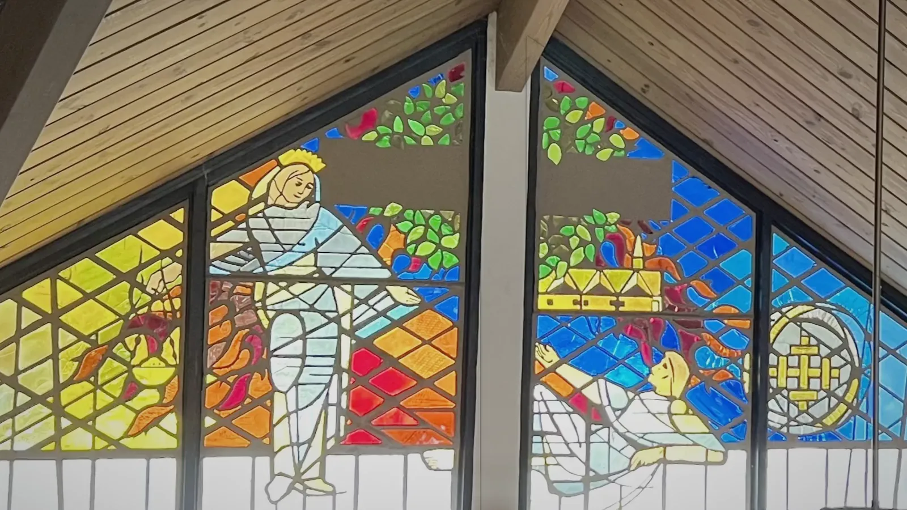
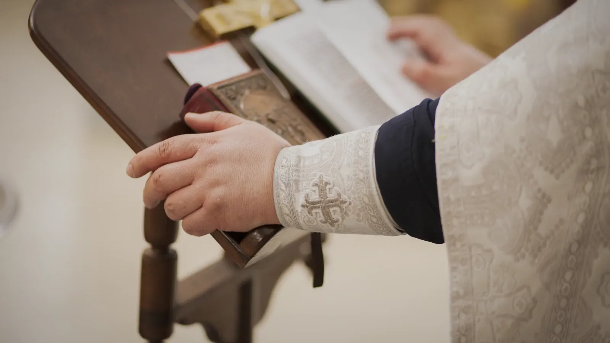
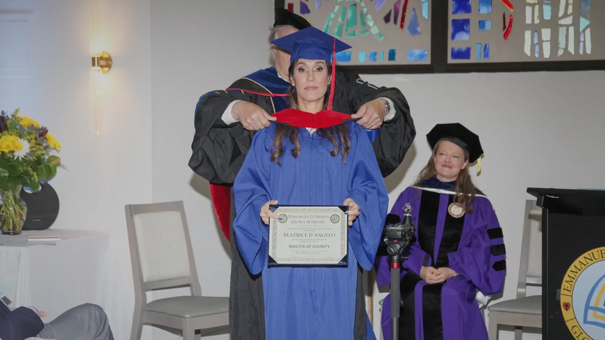
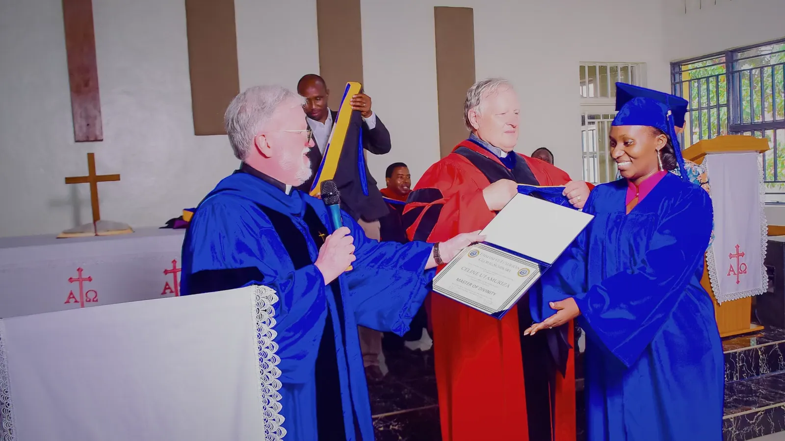
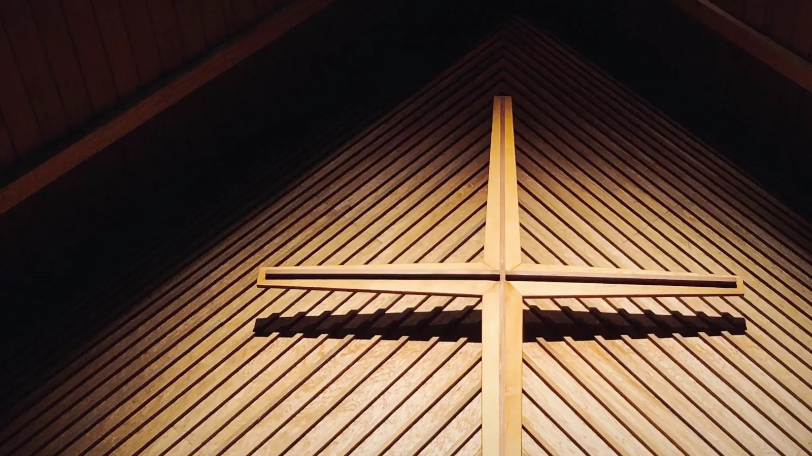
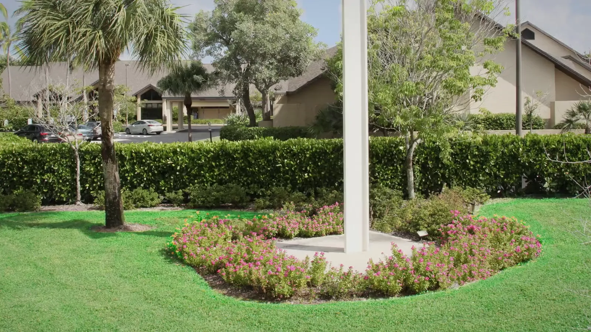

Lutheran pastoral formation, rebuilt around the student.
A three-mentor team, your own congregation as the classroom, and a degree issued by ATS-accredited Kairos University.
What we do best
You learn where you lead.
Our apprenticeship-style model replaces the lecture hall with ministry itself. You keep serving your congregation while a faculty mentor, a pastoral mentor and a personal mentor walk with you.
No two paths through seminary are the same.
The Master of Divinity has thirteen outcomes. How you demonstrate them is designed with your mentor team, around the work you already do.
For the called who cannot leave.
Adult learners. Second-career candidates. People with a family, a job and a congregation that needs them now. Tuition is capped at $300 a month, with online and hybrid study from anywhere.
Seventeen graduates. Three continents.
As of Spring 2025. Each one formed while serving their own community.
Photograph: an ELGS commencement. The Master of Divinity hood goes on.
The same formation, wherever the church is.
Built in English and offered in Spanish and other languages as needed, for students across Florida, Central and South America and Africa. Five degree programs, bachelor's through doctorate, in partnership with Kairos University.
Why trust us
Don't take our word for it.
- Four-Star Charity. Rated by Charity Navigator. See the rating
- Platinum Seal of Transparency, 2026. Awarded by Candid. See the profile
- Accredited degrees. Issued by Kairos University, accredited by the Higher Learning Commission and the ATS Commission on Accrediting. See the ATS listing
- Open books. A 501(c)(3) public charity with its Form 990 published. Read the Form 990
Two ways to walk out this door.
Called to ministry
Tell us where you serve. Our admissions team will follow up in person.
Called to give
One goal: no empty pulpits. A monthly gift keeps a seminarian moving toward one.
Emmanuel Lutheran Global Seminary, 3823 Tamiami Trl E, Unit 302, Naples, FL 34112. Team@ELGS.org. +1 508-622-5533.